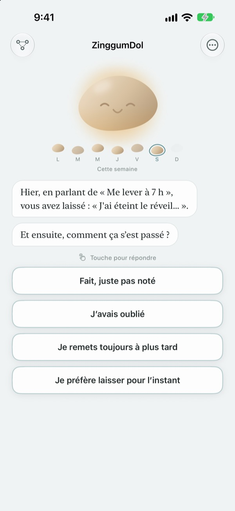
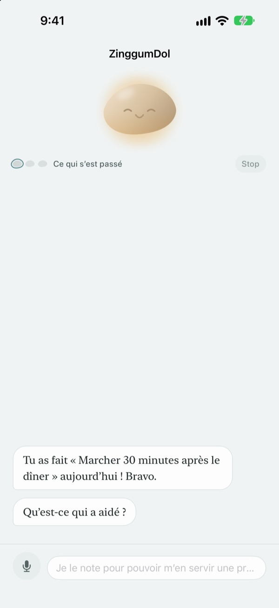
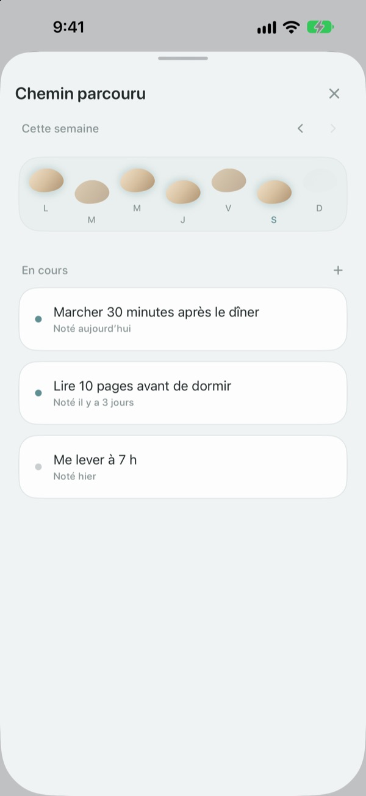
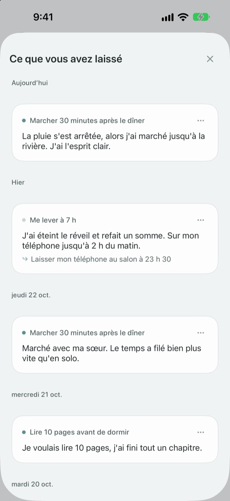

Un faux pas, ce n'est pas
tomber dans la rivière
Le jour où tu rates ton objectif, c'est le galet qui parle en premier. Il te demande ce qui s'est passé, pas ce que tu as fait de travers, puis te rend les faits et ton ressenti bien séparés.
Discuter, écrire et voir ton chemin, c'est gratuit. Ni compte ni publicité.

Parle au galet
Tu voulais marcher ce soir et tu ne l'as pas fait. Choisis une réponse ou écris la tienne : le galet te répond exactement comme dans l'app.
Quand une journée déraille, tu t'en veux ?
Le soir où tu as sauté ta séance, la première pensée est souvent « qu'est-ce qui cloche chez moi ? ». En y regardant de plus près, il y avait une réunion tardive, la pluie, la fatigue. ZinggumDol te demande ce qui s'est passé et ce que tu ressens à deux moments différents, puis pose les deux côte à côte. Quand tu vois que c'étaient les circonstances et pas ta volonté, le petit pas suivant devient plus facile à trouver.
Le galet parle en premier
Fixe un objectif et le galet garde un œil sur les jours où ça a marché et ceux où tu as calé. Quand un jour t'échappe, il demande « qu'est-ce qui s'est passé ? » plutôt que « pourquoi pas ? », et il se souvient de ce que tu lui as raconté la dernière fois.
Les jours où écrire te pèse, dis-le simplement à voix haute. La parole est reconnue sur ton appareil et les enregistrements ne sont jamais conservés.

Tes journées posées comme des pierres de gué
Chaque semaine s'étale en une rangée de pierres. Les jours où tu n'as pas posé le pied restent là aussi ; rien n'est effacé.
Même avec un trou ou deux, tu vois que le chemin continue.

Relis ce que tu as écrit
Ce qui s'est passé, ce que tu as ressenti et ce que tu vas essayer ensuite s'accumulent par date. Relis un jour où tu as calé de la même façon, et tu verras ce qui a marché.
Un widget affiche un mot du galet sur ton écran d'accueil, et un rappel à l'heure de ton choix t'invite à revenir sur ta journée.

Trois étapes pour commencer
- 1
Écris un objectif
Par exemple « Marcher 30 minutes après le dîner ».
- 2
Ouvre l'app en fin de journée
Le galet te demande comment s'est passée ta journée. Un rappel t'évite d'oublier.
- 3
Choisis ou écris ta réponse
Tu peux arrêter à tout moment avec
Je préfère laisser pour l’instant.
Comment se passe une conversation
- Ce qui s’est passé
- Juste les faits : ce qui t'a freiné
- Ressenti
- Comment tu te sens là, sur une échelle à cinq niveaux
- Regard en arrière
- Le galet te rend les faits et ton ressenti, bien séparés
- Prochain pas
- Tu choisis toi-même une petite chose, cinq minutes suffisent
- Conclusion
- Un jour vraiment difficile, il ne demande rien de plus et te propose de souffler
Tu peux t'arrêter à n'importe quel moment, et ce que tu as dit jusque-là est gardé.
Discuter et écrire, c'est gratuit. Pro si tu veux aller plus loin.
Gratuit
- Toutes les conversations avec le galet
- Jusqu'à trois objectifs
- Parler au lieu de taper
- Ton chemin et tout ce que tu as écrit
- Widget et rappel quotidien
- Verrouillage par code
ZinggumDol Pro
- Autant d'objectifs que tu veux
- Six finitions de galet au choix
- Export de tes notes en fichier texte
Un seul achat, à garder. Pas d'abonnement.
Aucun écran de paiement ne surgit au milieu d'une conversation. Sur un nouvel appareil ou après une réinstallation, touche Restaurer les achats dans les Réglages.
Questions fréquentes
Dois-je justifier chaque jour raté ?
Non. Touche Je préfère laisser pour l’instant à tout moment et la conversation s'arrête là. Ce que tu as dit jusque-là est gardé, tu pourras reprendre plus tard.
Je l'ai fait, mais l'app dit que non.
Touche Fait, juste pas noté. Le galet accepte la correction et te demande plutôt ce qui t'a aidé. Ce qui a marché est gardé, et il te le ressortira la prochaine fois que tu caleras.
Où va ce que je dis à voix haute ?
Ta voix est transformée en texte sur ton appareil et l'enregistrement n'est jamais conservé. Sur les appareils compatibles, tes phrases sont aussi reformulées pour se lire plus facilement, toujours sur l'appareil.
Combien d'objectifs puis-je avoir ?
Trois gratuitement. Quand tu en as fini avec un, utilise Lâcher dans Chemin parcouru pour libérer une place. Au-delà de trois, il te faut ZinggumDol Pro.
ZinggumDol Pro est-il un abonnement ?
Non. Tu paies une fois et c'est à toi. Sur un nouvel appareil ou après une réinstallation, touche Restaurer les achats dans les Réglages.
Quelqu'un d'autre peut-il lire mon journal ?
Il n'y a pas de compte. Tes notes restent sur ton appareil et dans ton propre iCloud, et tu peux verrouiller l'app par un code dans les Réglages. Ce que tu écris n'est jamais envoyé au développeur. Tu peux aussi désactiver les statistiques d'utilisation anonymes dans les Réglages.
Comment changer l'heure du rappel ?
Dans Rappel quotidien, dans les Réglages, tu l'actives, le désactives et choisis l'heure.
Le galet me rappelle-t-il mes réussites ?
Oui. Il retient ce qui t'a aidé, et un jour difficile, il te rappelle quelque chose que tu as réussi récemment.
Comment tout effacer ?
Touche Effacer toutes les notes dans les Réglages. Tes objectifs et tes notes disparaissent pour de bon, y compris sur tes autres appareils synchronisés par iCloud. Tes réglages et tes achats restent. Avec Pro, tu peux d'abord en garder une copie avec Exporter les notes.
Comment vous contacter ?
Via « Envoyer un retour » dans les Réglages de l'app, ou par e-mail à l'adresse ci-dessous.
Une question, une remarque ? Écris à leeo@kakao.com.